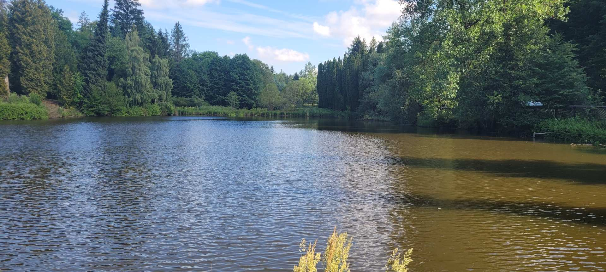
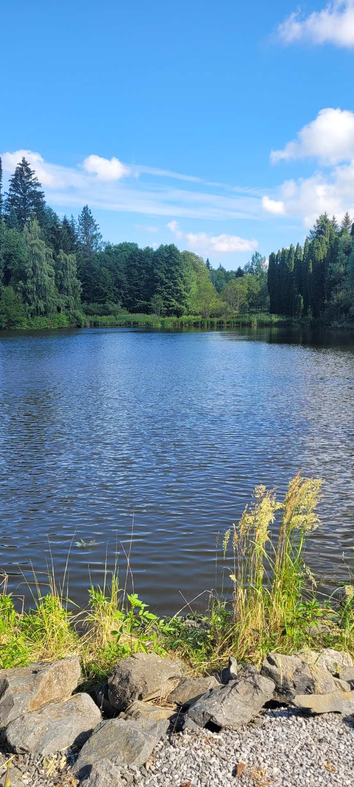
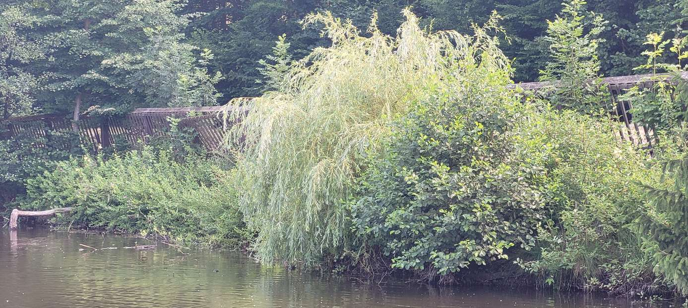
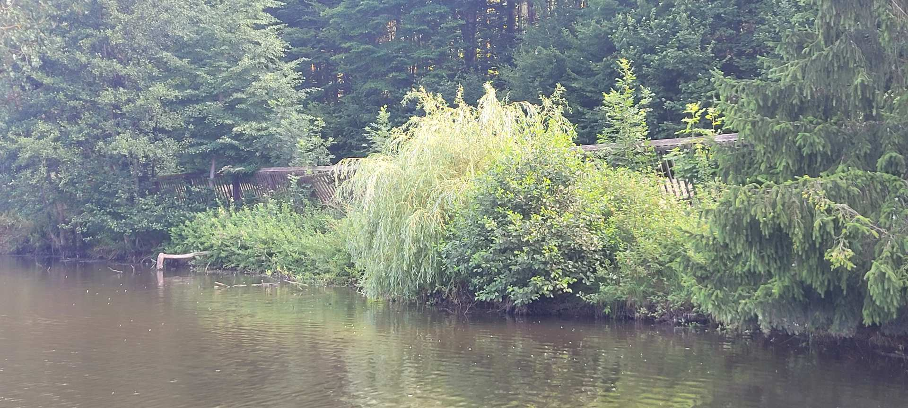
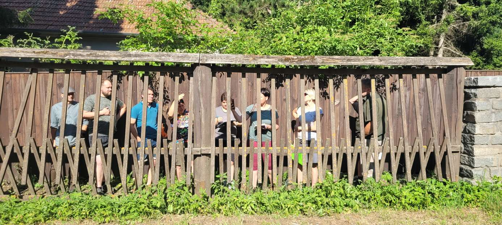
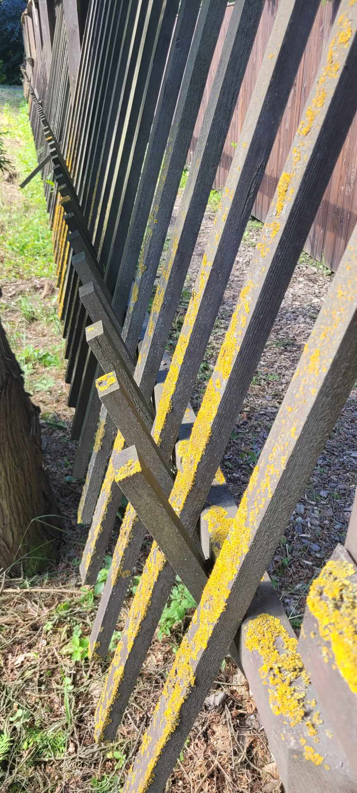
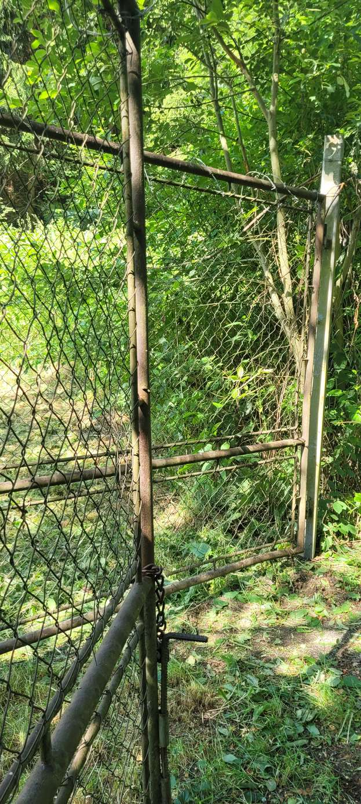
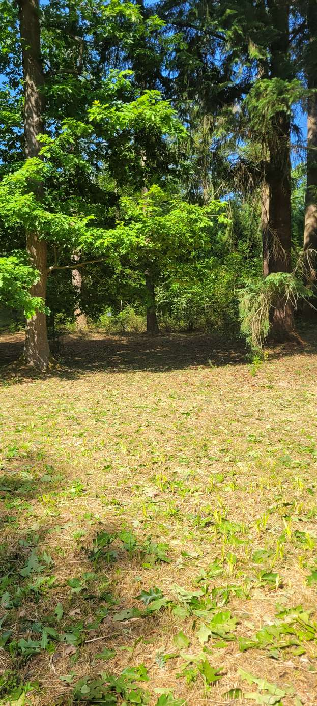
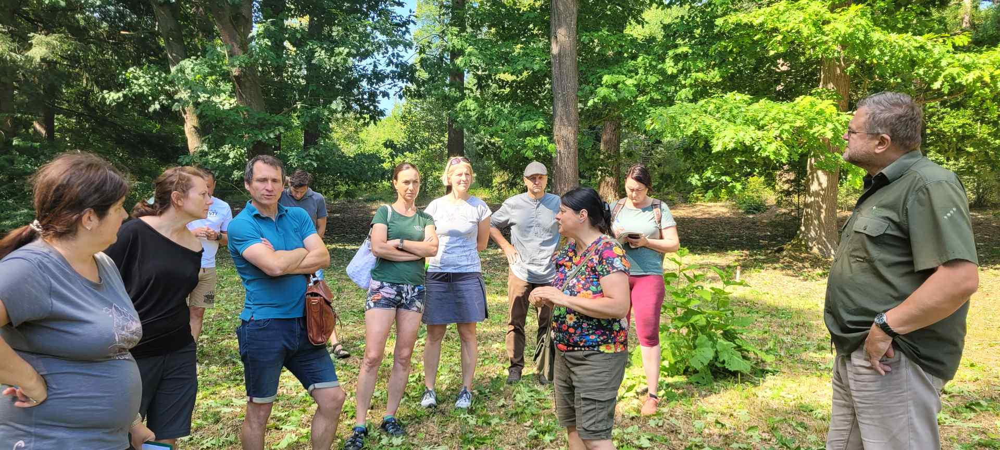

Arboretum Křtiny Mendelovy univerzity je významným zařízením pro výuku, výzkum i environmentální výchovu veřejnosti. Nachází se na rozhraní CHKO Moravský kras a rekreačně zatížené oblasti Brněnska, což s sebou přináší rostoucí návštěvnický tlak. Cílem záměru je posílit šetrnou návštěvnickou infrastrukturu a zajistit dlouhodobou udržitelnost areálu.
Altán se čtyřmi sadami piknikových stolů, sada sedmi edukativních panelů s interaktivními prvky na téma vrb a biodiverzity, dřevěná harfa a vrbový zápletový plůtek pro smyslové vnímání. Dvě nové štěpkové pěšiny v celkové délce cca 200 m, vrbové iglú a tunel pro dětské návštěvníky.
Rekonstrukce poškozeného oplocení chránícího nejcennější části arboreta pomůže regulovat návštěvnický pohyb.
Vzdělávací zóna Vrbiště bludiště s naučnými cedulemi, interaktivními prvky a altánem pro výuku v terénu. Pracovní listy pro tři věkové kategorie a brožura pro pedagogy. Nová šifrovací hra pro rodiny s dětmi a mobilní hra zaměřená na památníky Lesnického Slavína.
U příležitosti 100. výročí založení arboreta vznikne odborná monografie a síť více než 50 trvalých cedulek s QR kódy propojených s webovou databází dřevin.
V oblasti Ořešína vznikne návrh sítě hipotras vedených mimo frekventované pěší a cyklistické stezky, doplněný o tři naučné informační cedule s provozním řádem – cílem je snížit riziko kolizí mezi jezdci na koních, pěšími a cyklisty.







